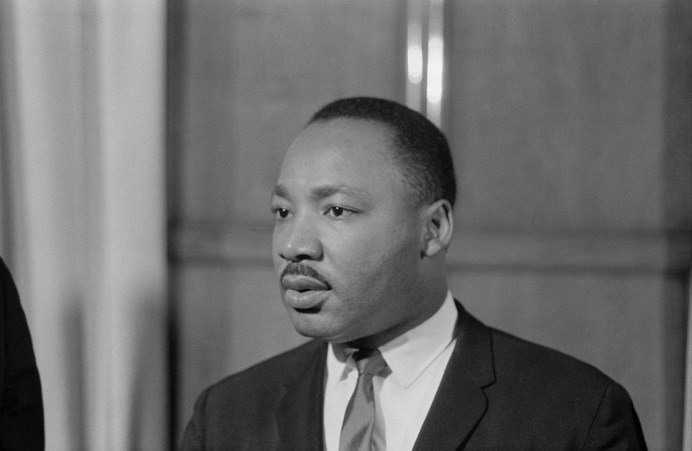

We will be comparing the pros and the cons of the food at McDonald's to determine if it is good or bad.
| Pros | Cons |
|---|---|
| Cheap food | High in calories |
| Made on the spot | Made from frozen food |
| Served quickly (minimal wait time) | Consuming large quantities |
|
|
|
|
|  |
Martin Luther King Jr.Martin Luther King Jr. was a leader of the Civil Rights Movement, known for his role in advancing civil rights through nonviolent protest and his powerful speeches.
|
 |
Rosa ParksRosa Parks became a symbol of the Civil Rights Movement after her refusal to give up her seat on a segregated bus, sparking the Montgomery Bus Boycott.
|
Barack ObamaBarack Obama made history as the first African American president of the United States, with a presidency focused on healthcare reform and social justice.
|